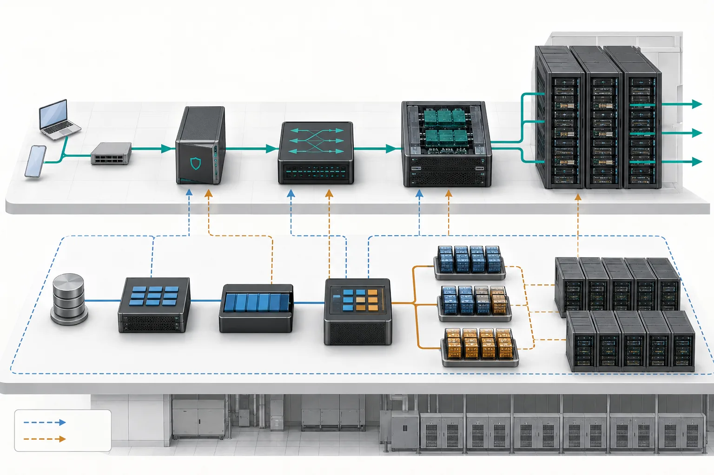

先看全景：一次请求如何走到 GPU
先把网关、调度、推理引擎、GPU 与指标放到同一张地图上，再学习每一层。
本页目录
学习目标
读完这一篇，你不需要会部署大模型，但应该能做到三件事：
- 看到一个项目名时，判断它处于“硬件、运行时、调度、服务还是治理”哪一层。
- 区分训练、推理与 Agent 三种工作负载。
- 明白后面 11 篇教程为什么按这个顺序排列。
一句话直觉：AI Infra 就像一座繁忙的机场。模型是飞机，GPU 是跑道，Kubernetes 是塔台，推理引擎负责让乘客高效登机，而可观测性系统负责告诉我们堵在哪里。

一条请求的完整旅程
先把两条容易混淆的路径分开：请求数据面处理每一次在线请求；Kubernetes 控制面负责提前创建、放置和维持模型副本。正常情况下，一个 Token 请求不会先去找 kube-scheduler。只有 Pod 尚未创建、扩缩容或故障恢复时，控制面才改变数据面可用的副本。
flowchart TB
subgraph DATA[请求数据面：每个请求都会经过]
U[用户] --> G[API 网关]
G --> R[推理路由器与请求队列]
R --> E[vLLM / SGLang 副本]
E --> H[GPU / NPU]
E --> S[流式 Token 返回]
end
subgraph CONTROL[Kubernetes 控制面：按状态变化工作]
A[API Server] --> C[Controller]
C --> K[kube-scheduler]
K --> N[kubelet 创建或替换 Pod]
end
N -.提供可用副本.-> E
O[指标、日志、追踪] -.观察.-> DATA
O -.触发扩缩或修复.-> CONTROL
可以把它压缩成五个问题：
| 层次 | 它回答的问题 | 论坛里的典型词 |
|---|---|---|
| 应用与入口 | 用户要做什么，身份和限额是什么？ | Agent、MCP、Gateway |
| 服务系统 | 请求交给哪个模型副本，怎样批处理？ | vLLM、SGLang、Router |
| 编排与调度 | 哪些 Pod 应该在哪些节点和 GPU 上运行？ | Kubernetes、DRA、Volcano、LWS |
| 运行时与通信 | 模型怎样变成 GPU 能执行的 Kernel？多卡怎样交换数据？ | PyTorch、Triton、NCCL |
| 硬件与治理 | 算力、显存、网络是否够用？慢和故障发生在哪里？ | GPU、NVLink、RDMA、OpenTelemetry |
三类工作负载不要混在一起
训练：修改模型参数
训练需要读取大量数据、计算梯度，并让多张 GPU 同步结果。它往往持续数小时甚至数周，最怕单卡故障让整个任务重来。因此训练重点是并行方式、通信效率、Checkpoint 与容错。
推理：使用已经训练好的模型
推理接收在线请求并生成 Token。它更在意首字延迟、每秒输出速度、并发量和每百万 Token 的成本。因此推理重点是批处理、KV Cache、路由、弹性与性能指标。
Agent：让模型反复调用工具
Agent 往往不是一次模型调用。它会思考、调用 MCP 工具、执行代码、读取结果，再继续调用模型。它让推理变得更有状态，也带来不可信代码、凭据、网络访问和审计问题。
sequenceDiagram
participant U as 用户
participant A as Agent Runtime
participant M as 模型服务
participant T as MCP 工具
participant X as 安全沙箱
U->>A: 提交任务
A->>M: 生成下一步计划
M-->>A: 调用代码工具
A->>X: 在隔离环境执行
X->>T: 按授权访问数据
T-->>X: 工具结果
X-->>A: 受控输出
A->>M: 带结果继续推理
M-->>U: 最终答案
后续知识如何衔接
先学硬件，是因为“计算受限”和“带宽受限”会贯穿后面所有性能讨论。再学 Kubernetes 和 PyTorch，才能理解谁负责资源、谁负责执行。之后分别进入训练与推理，最后用安全、可观测性和可靠性把生产系统闭环。
flowchart TD
A[01 全景地图] --> B[02 硬件直觉]
B --> C[03 Kubernetes]
B --> D[04 PyTorch 技术栈]
D --> E[05 分布式训练]
E --> F[06 GPU 通信]
D --> G[07 推理基础]
C --> H[09 AI 调度]
F --> I[08 分布式推理]
G --> I
H --> I
I --> J[10 Agent 基础设施]
J --> K[11 安全与多租户]
I --> L[12 可观测性与可靠性]
完整案例：首字突然慢了
假设一个文档摘要服务的 TTFT 从 0.8 秒升到 4 秒。先沿数据面查：入口是否排队，路由器是否把长提示都压到同一副本，Prefill 是否变慢，模型权重是否还在加载。若发现可用副本从 8 个降到 5 个，再转向控制面：Deployment 为什么没补齐，Pod 是调度不到 GPU，还是 kubelet 拉取模型失败。
这套顺序避免两种浪费：看到延迟就盲目加 GPU；看到 Pending Pod 就误以为它解释了所有慢请求。数据面证据告诉你“用户时间花在哪”，控制面证据告诉你“服务容量为何变成现在这样”。
flowchart LR
A[TTFT 上升] --> B{请求在哪一段等待}
B --> C[数据面：网关/路由/Prefill]
C --> D{可用副本不足吗}
D -->|否| E[优化批处理、缓存或 Kernel]
D -->|是| F[控制面：准入/调度/启动]
动手练习（15 分钟）
参考答案
展开参考分组
数据面：API Gateway、vLLM、GPU Kernel、KV Cache。控制面：kube-scheduler、Controller、Kueue、kubelet。kubelet 创建 vLLM Pod，Kueue/调度器决定它何时、在哪里获得资源；数据面的队列和延迟指标又可能触发控制面的扩缩容。
学完检查
- 我能明确说出在线请求通常不经过 kube-scheduler。
- 我能把陌生组件先归类为请求、工作负载、运行时、硬件或治理层。
- 我能分别描述训练、推理和 Agent 的优化目标。
常见误区
| 误区 | 更准确的理解 |
|---|---|
| “用了 Kubernetes 就自动获得高 GPU 利用率” | Kubernetes 提供编排基础，具体利用率仍取决于队列、拓扑、批处理、缓存和模型特性。 |
| “PyTorch 就是训练框架” | PyTorch 同时覆盖模型表达、自动微分、编译、分布式和设备抽象，也参与推理执行。 |
| “Agent 只是加了工具的聊天机器人” | 生产 Agent 需要身份、沙箱、状态、工作流、审计与故障恢复，是新的基础设施工作负载。 |
| “吞吐越高，用户体验一定越好” | 大批处理通常提高吞吐，却可能让单个请求排队更久；必须同时观察延迟。 |
对应论坛场次
观察 Agent Runtime 如何复用 Kubernetes、Kata Containers 与沙箱生命周期。 9/9 Keynote · A Cloud Native Stack from Bare Metal to Tokens
尝试把演讲中每个组件放回本文的五层地图。
带着这些问题听
- 演讲者所说的“平台”具体负责哪几层？
- 系统的主要瓶颈是计算、显存容量、显存带宽、网络还是排队？
- 哪个指标证明方案真的改善了用户体验或成本？
- 组件故障时，上下游分别看到什么？
五道自测题
1. Kubernetes 和 vLLM 谁负责决定请求进入哪个模型副本？
通常由推理网关或 vLLM 生态中的路由层决定；Kubernetes 主要负责 Pod 和设备资源的放置与生命周期。
2. 训练与推理共同依赖什么底层能力？
都依赖算力、显存、设备运行时、Kernel 和多设备通信，但优化目标不同。
3. 为什么 Agent 更需要沙箱？
因为它可能运行模型生成的不可信代码并访问外部工具，仅靠普通应用权限边界不够。
4. GPU 利用率低一定说明 GPU 不够忙吗？
不一定。采样窗口、通信等待、数据准备、KV Cache 压力和指标口径都会影响判断。
5. 遇到陌生项目名，第一步该问什么？
问它位于哪一层、管理什么对象、替代了什么旧方案。